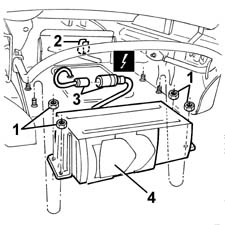

5570T84 compact disc unit - r+r
- Path
- Procedures > 55 ELECTRICAL EQUIPMENT > 5570 ACCESSORIES > 5570T CAR RADIO AND CAR TELEPHONE > 5570T84 compact disc unit - r+r
- Kind
- repair procedure (removal / refitting; the operation number is the code)
- Applies to
- all engines; all production periods
- Interactive page
- https://sloeber94.github.io/elrnDB-fMltpl/en/#/2891964
Applies to: all engines; all production periods
 Removing
Removing
 Refitting
RefittingPlace the right front seat in the rear end of travel position.
1. Working underneath the seat, undo the nuts fixing the CD equipment.
2. Move the CD equipment slightly forwards and release the electrical connection from the retainer.
3. Disconnect the electrical connection.
 | Name | Connector |
|---|---|---|
3 | CD multi-player |
4. Keep the CD equipment.

Applies to: all engines; all production periods
Refitting
RemovingCheck that the CD equipment is not damaged.
Connect the electrical connection and fit it to the retainer.
Position the CD equipment and secure it using the nuts.
Check that the CD equipment is working properly.